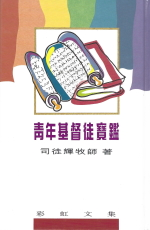

彩虹文集
青年基督徒寶鑑
主頁 Home
→
彩虹文集
→青年基督徒寶鑑

青年基督徒寶鑑
(一) 獻給青年基督徒-- 婚姻七寶箱
(二) 青年基徒寶訓 -- 勝過試探七秘訣
(三) 青年的當頭棒 -- 時代的七狂
(四) 青年以賽亞 -- 蒙神差遣的四級階梯
(五) 與青年基督徒漫談人生四讀 -- 讀書、讀人、讀事、讀經
(六) 時代青年基督徒的四條平行線
(七) 青年基督徒三寶訓
(八) 學甚麼? -- 獻給青年神學生
(九) 謹防八急 -- 獻給青年傳道人及神學生
(十) 由青年以撒娶妻說起
(十一) 謹防十失 -- 獻給青年傳道人
閱讀全書 (繁體下載) (PDF, 2138KB)
上一本書 Previous
下一本書 Next